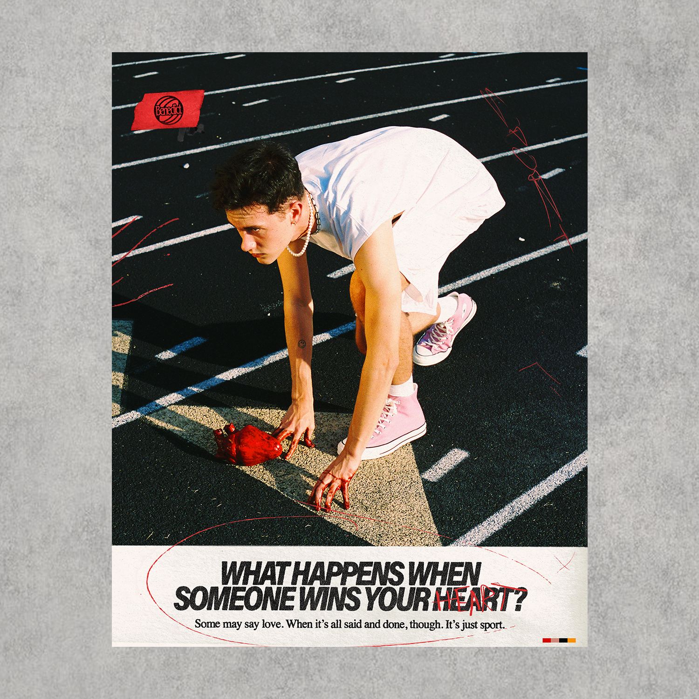
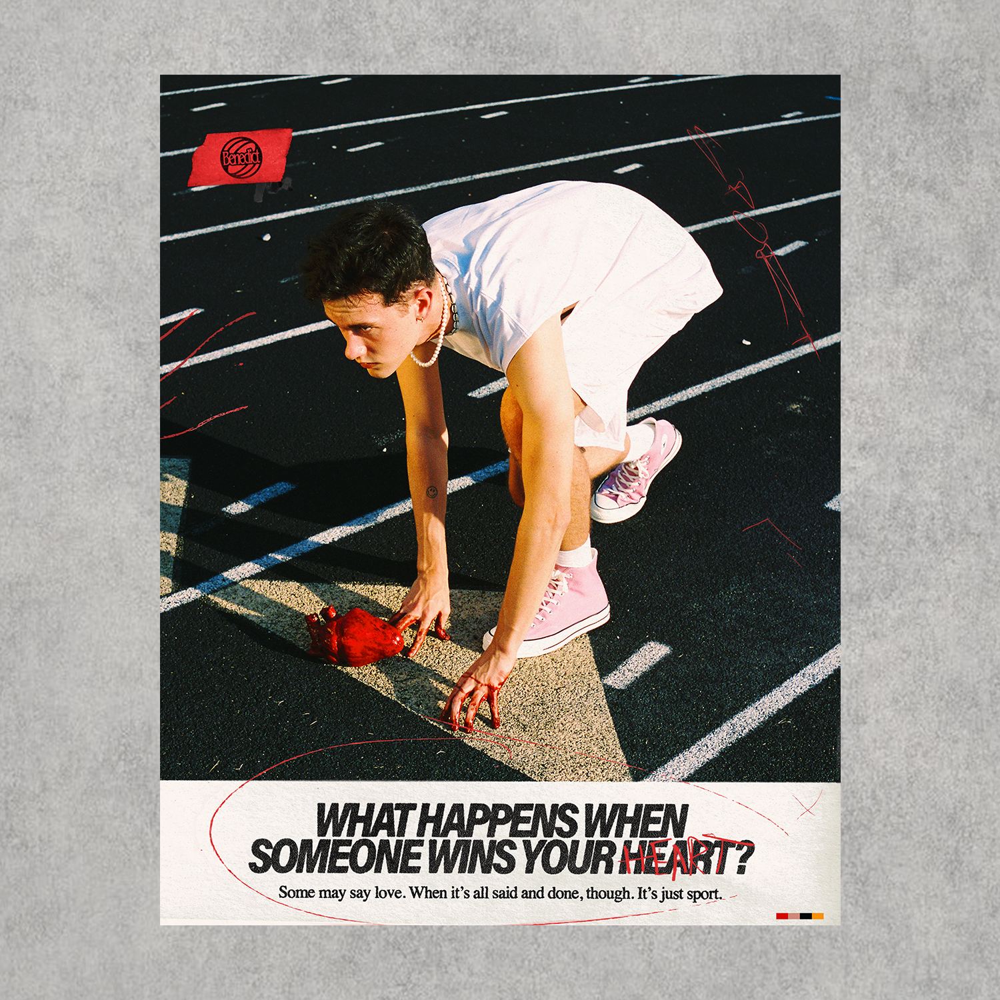
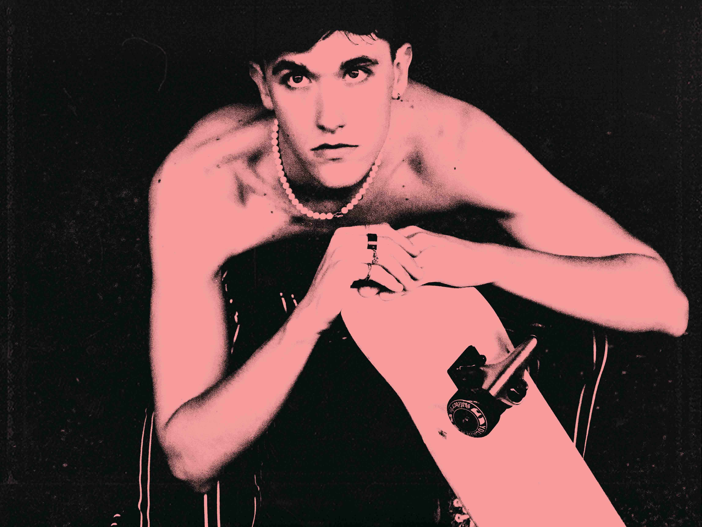
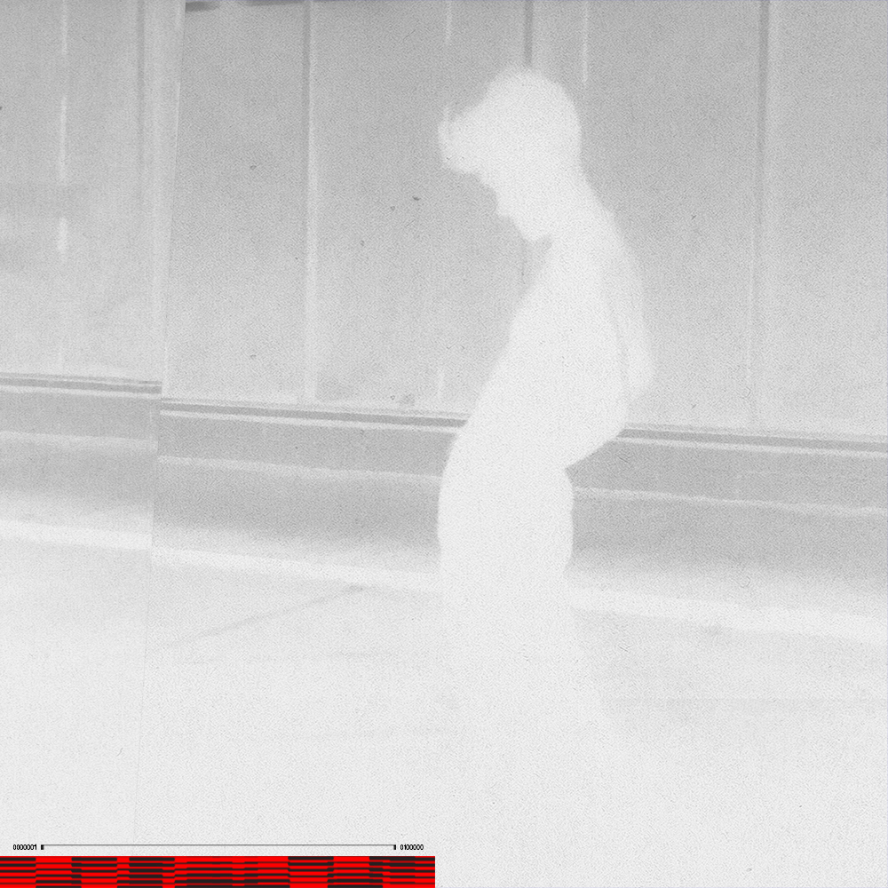
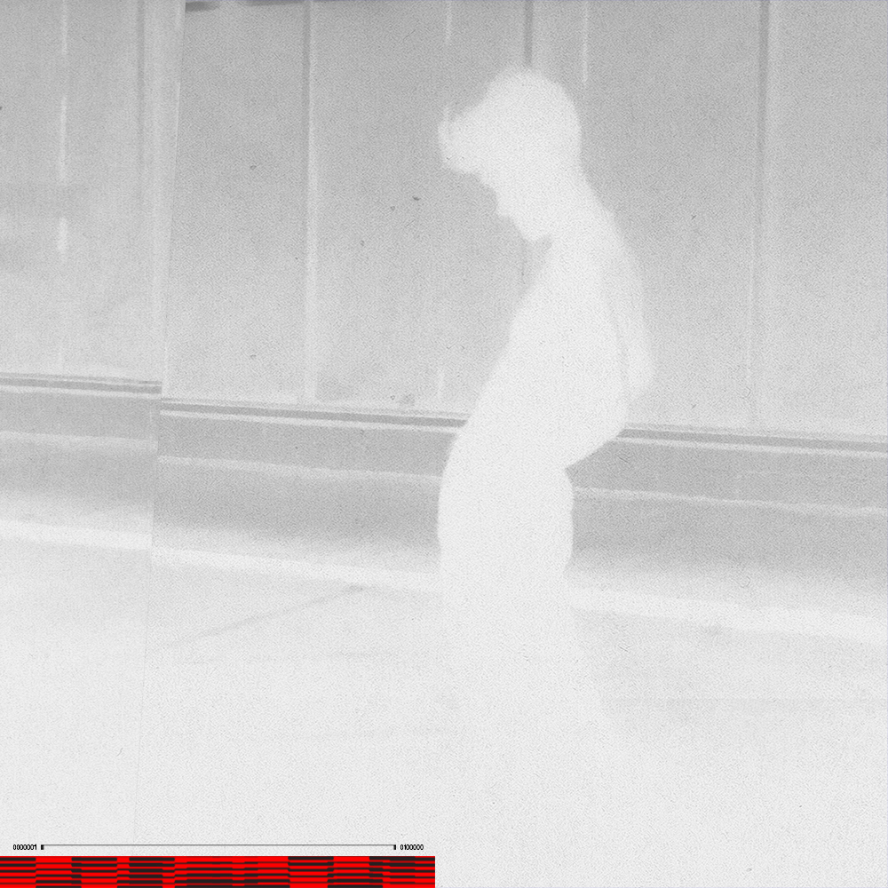

4D
2020
Packaging design and branding for 4D, a perfume line with an interest in the multi-sensory experience. The design of the packaging was strongly directed by the concept of illusory animation, created in this case by moire lines and a transparent sleeve.
Packaging, Branding, 3d, Motion

MONNNO
2020
MONNNO is a typographic experiment in form and space, seeking to render an efficient and beautiful 2D typeface in a physical 3D environment with certain restraints such as physics, dimension, and shape. The forms of each 2D letter are given by a singular "perfect" viewpoint of the 3D sculpture, as if the form itself is a snapshot of time amongst countless perspectives.
Typography, 3d, Motion
Sport to You
2020
Logotype, title screens, and posters for pop artist Benedict. Photos by Luke Rogers. Music video directed by Daniel Chaney and Kathryn Hurtado.
Musician, Typography
 

Benedict
2020
Branding and photography for pop artist Benedict.
Poster, Musician, Branding, Photo
 

Maya
2019
A political campaign of the future: a future of meticulous pandering, false promises, artificial design, and technological advancement for social manipulation. Maya, a CGI political movement, embodies the fallacies of our current/upcoming social and political climate.
Branding, 3d, Motion
Collaborators: Christian Townsend, Isabelle Wolf

.jpg)

Wolfstock
2020
Wolfstock is an annual music festival hosted by North Carolina State University every year for students to celebrate the end of the school year and the beginning of the summer. I was challenged to design an entire new brand for the event to match the excitement and intrigue it brought to students. The brand takes inspiration from the energetic imagery and emotive style of 70s punk bands.
Branding, Motion
.png)

.jpg)
WWWdot
2019
WWWdot is a full fledged attempt at publication design and large-scale typographic systems. WWWdot was created by myself as a monthly documentation of the wonderful world we call the Internet. The publication became a physical embodiment of the various contextual juxtapositions between the internet and the physical page.
Editorial
.jpg)
.png)

Philly2019
2019
A location based visual study of Philadelphia over the course of a summer. The environment quickly captured my imagination and inspired me to attempt to document my time through the lense of the Philly aesthetic. Contained in this zine is a conglomeration of all my design experiments , various photography explorations, and materiality studies throughout the summer.
Editorial
%20copy.png)
.png)
Urban Outfitters
2019
I participated in a summer long internship at Urban Outfitters within the UI team. I fully enveloped myself in the complicated world of developing various interaction designs manifesting in multiple mediums under the umbrella of a large corporation. Below is some random stuff I made during the internship.
Digital Interactive
Collaborators: Andrew McQuiston, Eleni Trap, Alex Moncada.
.jpg)
.jpg)
.png)
Our Voices Will be Heard
2019
‘Our Voices Will be Heard’ is an experimental multimedia experience hosted by faculty and students of NC State University. It was created in order to celebrate and tell the story of the women's suffrage movement. The experience consists of a live orchestra playing a custom piece and a series of virtual reality experiences playing during the music. Audience members are encouraged to use their own devices to experience the visuals in tandem to listening to the live music. I was challenged to design a portion of the 360 visuals to go into the show.
Digital Interactive

.png)
Dark Arts
2019
“Dark Arts” is an interactive exhibition I directed for the Fish Market Student Gallery at NC State University. We covered the gallery with paper. We gave people markers and headlamps at the door. It was a blast
Physical Interactive
Collaborators: Lydia Farro, Andy Hilts, Campbell Briggs.


Notice
2019
"Notice" an interactive exhibition I directed for the Fish Market Student Gallery at NC State University. Cameras and projectors were placed throughout the gallery to give visitors the opportunity to spy on the people around them. Live music was provided by viewing an intimate set in the DJ's bedroom.
Physical Interactive
Collaborators: Lydia Farro, Andy Hilts, Campbell Briggs.